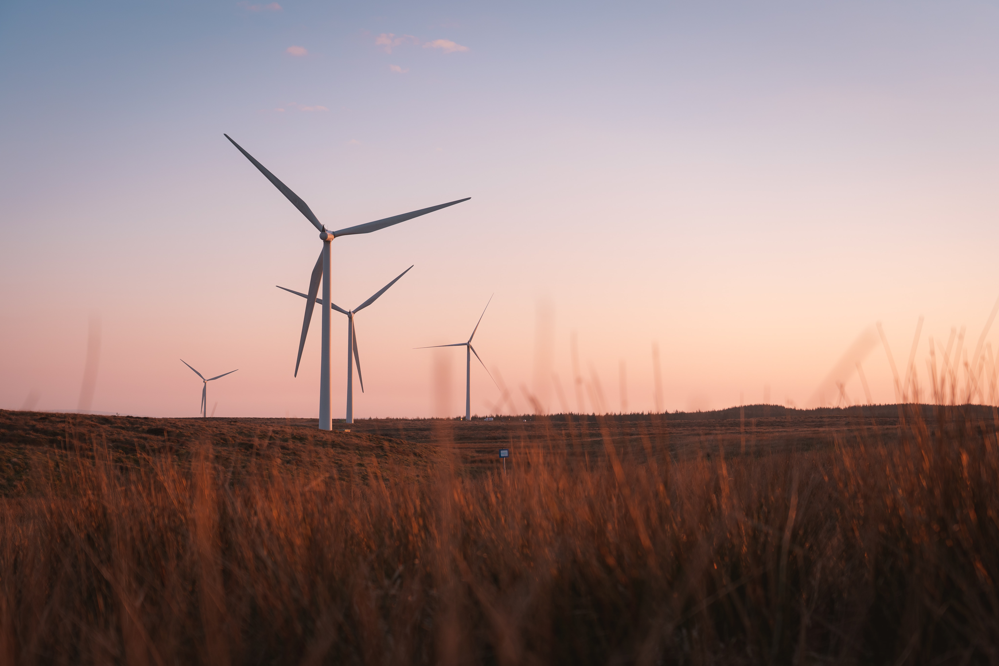

“The house is on fire and you gotta put it out, it doesn’t matter who set it and it doesn’t matter how much work is involved because you need a house,” says Daniel Curewitz, Associate Teaching Professor for Earth and Environmental Sciences at Syracuse University.
What Professor Curewitz is referring to in this quote is global warming. The burning of fossil fuels is increasing Earth’s temperature every day, and the effects of this warming are increasing as well.
One especially concerning effect of global warming is the rise in the frequency and magnitude of natural disasters across the globe. When it comes to analyzing these increases, it is important to look at each type of disaster individually. Measuring the frequency and magnitude of tornadoes is very different than measuring the frequency and magnitude of hurricanes, and the same can be said for all natural disasters. Hence, it is hard to say with certainty that all natural disasters are increasing in number and magnitude because of global warming.
Professor Curewitz, however, says some changes in the frequency and magnitude of natural disasters are very clear. For instance, when it comes to forest fires, Curewitz notes there are more of them, they are covering larger areas, and they are more intense. Hurricanes, on the other hand, can be a bit trickier. It is possible that the number of hurricanes is going up, but it is definite that the total energy present in hurricanes is increasing.
The idea of total energy relates back to the cause: global warming. The temperature is rising, which means there is more heat in the atmosphere, and heat is energy. This extra heat also means the air can hold more water, sucking more water from the ground creating intense droughts and adding more water into tropical storms. Thus, the increased temperatures can increase the intensity of completely opposite disasters at the same time.
Below are three maps that show the total number of floods, earthquakes, and extreme temperatures in the United States from 1985 to 2018. These maps further exemplify the increasing magnitude of natural disasters, while also proving that the number of the natural disasters isn’t increasing as intensely.
Observing that the magnitude of natural disasters is increasing doesn’t provide much information unless the ways in which they’re causing more destruction are also looked at. Curewitz notes there are two main reasons why destruction has increased so much. As previously mentioned, one reason is simply that the storms are stronger. There is more heat energy in the atmosphere, therefore providing more fuel for the disasters. The other reason, however, is that our infrastructure is more advanced than ever before. More advanced infrastructure not only means buildings, bridges, and tunnels are easier to destroy, but it also means they are harder to put back together.
Thinking about infrastructure is when the effects of the increased magnitude and destruction come into play. Ethan Coffel, Assistant Professor of Geography and the Environment at Syracuse University, notes “the amount of money that the U.S. spends on disaster recovery has gone up pretty sharply.” This money, added to the money that the U.S. is spending to try to slow down the effects of global warming, is taking billions of dollars away from other important global matters such as world hunger and lack of access to clean water.
In addition to money, the increased magnitude of natural disasters is also affecting the livelihoods of millions of people around the world. People living in the peripheral, or developing, nations are experiencing the effects of these increases sooner and more intensely, says Curewitz. Most people living in peripheral nations have jobs that rely on the environment around them. Farmers of all kinds are being put out of business because the climate they are used to, and the climate their crops need, is changing.
"It's very clear from the last 50 years of reasonably good data that the intensity of natural disasters has increased." - Professor Daniel Curewitz
With their livelihoods being ripped out from underneath them, millions of people are forced to change the way they live, even in the places they have resided for centuries. This points to another effect of the increasing magnitudes: the mass movement of people from peripheral nations to core, or developed nations. While this movement is of course unfortunate and inconvenient for the people moving, it also causes problems for the people who reside in the places they’re moving to.

Picture by Sumit
The problems caused by the increase in the frequency and magnitude of natural disasters is never ending, but what are the solutions to fix them? Contrary to popular belief, the solutions aren’t found in simply stopping the burn of fossil fuels. In fact, Curewitz points out that “if we were to stop using fossil fuels right now and go to zero emissions, billions of people would die.” This is because, he states, the global economy and its ability to feed billions of people around the world is heavily reliant on fossil fuels. Completely taking them away would take the basic human need of food away from billions of people.
Because completely getting rid of fossil fuels is not the answer, Curewitz notes there are two things that can be done simultaneously to decrease global warming’s effects on the world, and in turn its effects on natural disasters. First, as much carbon dioxide as possible needs to be removed from the air. Recent discoveries—such as certain types of algae that take in carbon dioxide quicker and technologies that convert carbon dioxide to a solid—are available to help with this step. Second, the additional amount of carbon dioxide released into the atmosphere needs to be reduced as much as possible. Coffel believes this can be done by electrifying everything that can be electrified and by taking advantage of alternative sources of energy such as wind, water, nuclear, and solar.

Picture by Sam Cumming
Aside from addressing the levels of carbon dioxide in the atmosphere, Coffel also thinks there is another way to go about limiting the effects of increased natural disasters on the world. He believes people’s exposure to natural disasters can be decreased by simply putting disincentives in place to get people not to live in certain areas. An example of this would be instituting a tax to push people away from building homes on the coast. If fewer people are in the most frequently impacted areas, fewer people will be affected, and less money will have to be spent rebuilding infrastructure.
Below are two graphs comparing the amount of carbon dioxide emissions to the total number of floods globally between 1900 and 2019. It is clear there is a direct relationship between the two graphs, showing that flood frequencies are a good indicator of the effects of global warming.